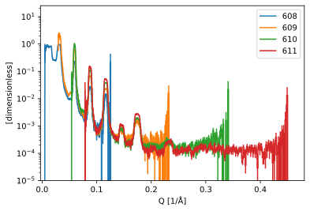
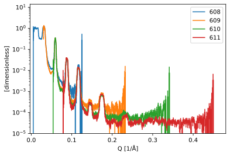

Divergent data reduction for Amor#
In this notebook, we will look at how to use the essreflectometry package with Sciline, for reflectometry data collected from the PSI instrument Amor in divergent beam mode.
This notebook shows the basics of computing reduced results for a set of runs and saving them to Orso file format.
Setup#
[1]:
# %matplotlib widget
import warnings
import scipp as sc
from ess import amor
from ess.amor import data # noqa: F401
from ess.reflectometry.types import *
from ess.amor.types import *
from ess.reflectometry import batch_compute
# The files used in this tutorial have some issues that makes scippnexus
# raise warnings when loading them. To avoid noise in the notebook the warnings are silenced.
warnings.filterwarnings('ignore', 'Failed to convert .* into a transformation')
warnings.filterwarnings('ignore', 'Invalid transformation')
warnings.filterwarnings('ignore', 'invalid value encountered')
Create and configure the workflow#
We begin by creating the Amor workflow object which is a skeleton for reducing Amor data, with pre-configured steps, and then set the missing parameters which are specific to each experiment:
[2]:
workflow = amor.AmorWorkflow()
workflow[SampleSize[SampleRun]] = sc.scalar(10.0, unit='mm')
workflow[SampleSize[ReferenceRun]] = sc.scalar(10.0, unit='mm')
workflow[ChopperPhase[ReferenceRun]] = sc.scalar(-7.5, unit='deg')
workflow[ChopperPhase[SampleRun]] = sc.scalar(-7.5, unit='deg')
workflow[WavelengthBins] = sc.geomspace('wavelength', 2.8, 12.5, 2001, unit='angstrom')
# The YIndexLimits and ZIndexLimits define ranges on the detector where
# data is considered to be valid signal.
# They represent the lower and upper boundaries of a range of pixel indices.
workflow[YIndexLimits] = sc.scalar(11), sc.scalar(41)
workflow[ZIndexLimits] = sc.scalar(80), sc.scalar(370)
workflow[BeamDivergenceLimits] = (
sc.scalar(-0.75, unit='deg'),
sc.scalar(0.75, unit='deg'),
)
Setting the reference run#
The reference represents the intensity reflected by the super-mirror. The same run is used for normalizing all sample runs, and it thus only needs to be reduced once.
In this subsection, we reduce the reference run and cache it onto the workflow to speed-up subsequent processing.
[3]:
workflow[Filename[ReferenceRun]] = amor.data.amor_run(614)
# The sample rotation value in the file is slightly off, so we set it manually
workflow[SampleRotationOffset[ReferenceRun]] = sc.scalar(0.05, unit='deg')
# Set the result back onto the pipeline to cache it
workflow[ReducedReference] = workflow.compute(ReducedReference)
Downloading file 'amor2023n000614.hdf' from 'https://public.esss.dk/groups/scipp/ess/amor/2/amor2023n000614.hdf' to '/home/runner/.cache/ess/amor'.
Computing sample reflectivity from batch reduction#
We now compute the sample reflectivity from 4 runs that used different sample rotation angles. The measurements at different rotation angles cover different ranges of \(Q\).
We use the batch_compute function which makes it easy to process multiple runs at once.
[4]:
runs = {
'608': {
SampleRotationOffset[SampleRun]: sc.scalar(0.05, unit='deg'),
Filename[SampleRun]: amor.data.amor_run(608),
},
'609': {
SampleRotationOffset[SampleRun]: sc.scalar(0.05, unit='deg'),
Filename[SampleRun]: amor.data.amor_run(609),
},
'610': {
SampleRotationOffset[SampleRun]: sc.scalar(0.05, unit='deg'),
Filename[SampleRun]: amor.data.amor_run(610),
},
'611': {
SampleRotationOffset[SampleRun]: sc.scalar(0.05, unit='deg'),
Filename[SampleRun]: amor.data.amor_run(611),
},
}
# Compute R(Q) for all runs
r_of_q = batch_compute(workflow, runs, target=ReflectivityOverQ)
r_of_q
Downloading file 'amor2023n000608.hdf' from 'https://public.esss.dk/groups/scipp/ess/amor/2/amor2023n000608.hdf' to '/home/runner/.cache/ess/amor'.
Downloading file 'amor2023n000609.hdf' from 'https://public.esss.dk/groups/scipp/ess/amor/2/amor2023n000609.hdf' to '/home/runner/.cache/ess/amor'.
Downloading file 'amor2023n000610.hdf' from 'https://public.esss.dk/groups/scipp/ess/amor/2/amor2023n000610.hdf' to '/home/runner/.cache/ess/amor'.
Downloading file 'amor2023n000611.hdf' from 'https://public.esss.dk/groups/scipp/ess/amor/2/amor2023n000611.hdf' to '/home/runner/.cache/ess/amor'.
[4]:
- 608scippDataArray(Q: 500)float64𝟙binned data [len=0, len=0, ..., len=50, len=62]
- 609scippDataArray(Q: 500)float64𝟙binned data [len=0, len=0, ..., len=81, len=85]
- 610scippDataArray(Q: 500)float64𝟙binned data [len=0, len=0, ..., len=5, len=6]
- 611scippDataArray(Q: 500)float64𝟙binned data [len=0, len=0, ..., len=3, len=3]
[5]:
sc.plot(r_of_q.hist(), norm='log', vmin=1e-5)
[5]:

Scaling the reflectivity curves to overlap#
If we know the curves have been scaled by different factors (that are constant in Q), it can be useful to scale them so they overlap:
[6]:
scaled_r = batch_compute(
workflow,
runs,
target=ReflectivityOverQ,
scale_to_overlap=(
sc.scalar(0.01, unit='1/angstrom'),
sc.scalar(0.014, unit='1/angstrom'),
),
)
sc.plot(scaled_r.hist(), norm='log', vmin=1e-5)
[6]:

Save data#
We can save the computed \(I(Q)\) to an ORSO .ort file using the orsopy package.
First, we need to collect the metadata for that file. To this end, we insert a parameter to indicate the creator of the processed data.
[7]:
from ess.reflectometry import orso
from orsopy import fileio
[8]:
workflow[orso.OrsoCreator] = orso.OrsoCreator(
fileio.base.Person(
name='Max Mustermann',
affiliation='European Spallation Source ERIC',
contact='max.mustermann@ess.eu',
)
)
We build our ORSO dataset from the computed \(I(Q)\) and the ORSO metadata:
[9]:
iofq_datasets = batch_compute(
workflow,
runs,
target=orso.OrsoIofQDataset,
scale_to_overlap=(
sc.scalar(0.01, unit='1/angstrom'),
sc.scalar(0.014, unit='1/angstrom'),
),
)
We also add the URL of this notebook to make it easier to reproduce the data:
[10]:
for ds in iofq_datasets.values():
ds.info.reduction.script = (
'https://scipp.github.io/essreflectometry/user-guide/amor/amor-reduction-simple.html'
)
Finally, we can save the data to a file. Note that iofq_datasets contains orsopy.fileio.orso.OrsoDatasets.
[11]:
fileio.orso.save_orso(
datasets=list(iofq_datasets.values()), fname='amor_reduced_iofq.ort'
)
Look at the first 50 lines of the file to inspect the metadata:
[12]:
!head amor_reduced_iofq.ort -n50
# # ORSO reflectivity data file | 1.2 standard | YAML encoding | https://www.reflectometry.org/
# data_source:
# owner:
# name: J. Stahn
# affiliation: null
# contact: ''
# experiment:
# title: commissioning
# instrument: Amor
# start_date: 2023-11-13T13:27:08
# probe: neutron
# facility: SINQ
# sample:
# name: SM5
# model:
# stack: air | 20 ( Ni 7 | Ti 7 ) | Al2O3
# measurement:
# instrument_settings:
# incident_angle: {min: 0.004573831271192303, max: 0.028638334239433454, unit: rad}
# wavelength: {min: 2.8000112325761113, max: 12.499999993767076, unit: angstrom}
# polarization: null
# data_files:
# - file: amor2023n000608.hdf
# additional_files:
# - file: amor2023n000614.hdf
# comment: supermirror
# reduction:
# software: {name: ess.reflectometry, version: 26.5.1, platform: Linux}
# timestamp: 2026-05-01T08:26:10.458249+00:00
# creator:
# name: Max Mustermann
# affiliation: European Spallation Source ERIC
# contact: max.mustermann@ess.eu
# corrections:
# - chopper ToF correction
# - footprint correction
# - supermirror calibration
# script: https://scipp.github.io/essreflectometry/user-guide/amor/amor-reduction-simple.html
# data_set: 0
# columns:
# - {name: Qz, unit: 1/angstrom, physical_quantity: wavevector transfer}
# - {name: R, physical_quantity: reflectivity}
# - {name: sR, physical_quantity: standard deviation of reflectivity}
# - {name: sQz, unit: 1/angstrom, physical_quantity: standard deviation of wavevector
# transfer resolution}
# # Qz (1/angstrom) R sR sQz (1/angstrom)
4.9932428126801473e-03 5.4699980526077474e-01 2.2331174752526448e-01 2.8742860476410782e-04
5.0296863300743778e-03 4.5462124096858986e-01 2.0331280664098425e-01 2.8943294734858955e-04
5.0663958329233314e-03 9.8277340533751156e-01 2.7258610953721379e-01 2.8867114543253765e-04
5.1033732625396788e-03 5.4814630683489796e-01 1.8272485456026058e-01 2.9262049558691764e-04